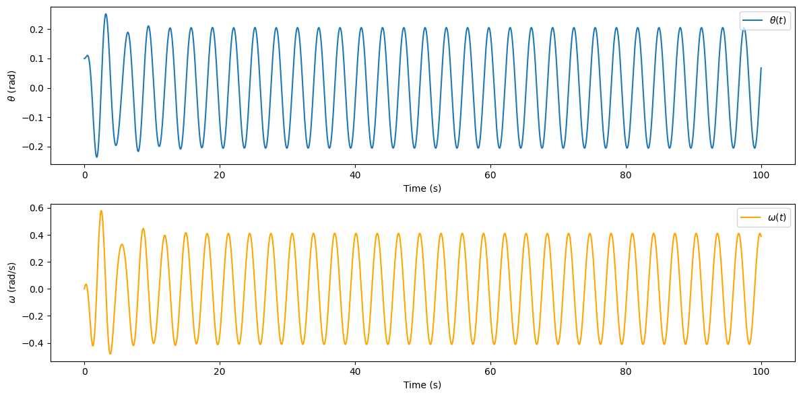
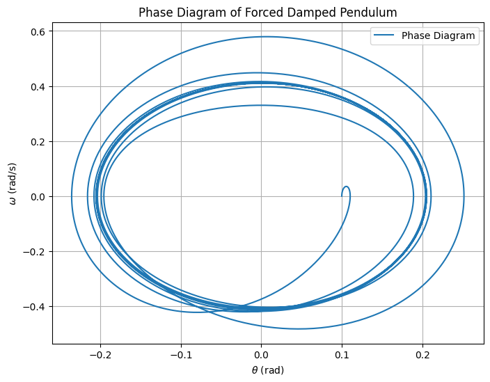
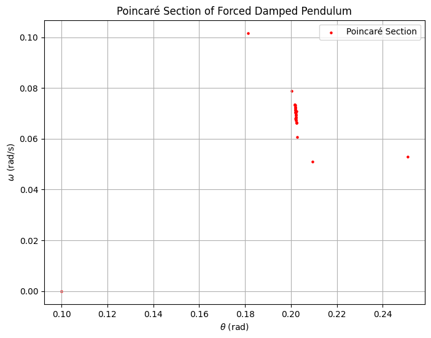

Problem 2
Theoretical Foundation
Governing Equation
The motion of a forced damped pendulum is governed by the differential equation:
where:
- \(\theta\) is the angular displacement,
- \(\gamma\) is the damping coefficient,
- \(F_d\) is the amplitude of the external forcing,
- \(\omega_d\) is the driving frequency.
For small angles, we approximate \(\sin(\theta) \approx \theta\), simplifying the equation to:
This equation resembles the standard damped driven oscillator.
Approximate Solutions
The general solution for small-angle oscillations can be expressed as:
where \(\theta_{p}(t)\) is the particular solution due to external forcing. The amplitude and phase of the response depend on resonance conditions.
Resonance Conditions
Resonance occurs when the driving frequency \(\omega_d\) is close to the system's natural frequency:
At resonance, the amplitude of oscillations peaks, which can be critical in engineering applications such as bridges and buildings. For example, the Tacoma Narrows Bridge collapse was a consequence of wind-induced resonance.
Energy Considerations
The total energy of the system is affected by damping and external forcing. The balance between energy input and dissipation determines whether oscillations persist, decay, or become chaotic.
Analysis of Dynamics
Influence of System Parameters
The behavior of the forced damped pendulum depends on the parameters \(\gamma\), \(F_d\), and \(\omega_d\):
- Damping Coefficient (\(\gamma\)):
- High damping reduces oscillations and accelerates settling.
-
Low damping prolongs oscillations and can lead to chaotic behavior.
-
Driving Amplitude (\(F_d\)):
- Small \(F_d\) results in nearly harmonic motion.
-
Large \(F_d\) may induce chaos.
-
Driving Frequency (\(\omega_d\)):
- Near resonance (\(\omega_d \approx \omega_0\)), the amplitude is maximized.
- Off-resonance driving leads to steady oscillations at lower amplitudes.
Transition from Regular to Chaotic Motion
The system undergoes a transition through different dynamic regimes:
- Regular Motion: At low forcing, motion is periodic and predictable.
- Quasiperiodic Motion: Increased forcing introduces complex but non-chaotic patterns.
- Chaotic Motion: High \(F_d\) leads to chaotic behavior with extreme sensitivity to initial conditions.
Chaos Analysis
The transition to chaos is analyzed using:
- Poincar\'e Sections to identify periodic and chaotic attractors.
- Bifurcation Diagrams showing transitions between periodicity and chaos.
- Lyapunov Exponents quantifying sensitivity to initial conditions.
These analyses help understand chaotic behavior in physical systems like climate models, mechanical oscillators, and biological rhythms.
Practical Applications
The forced damped pendulum model applies to various real-world scenarios, including:
1. Energy Harvesting Devices
Vibrational energy harvesters use principles similar to the forced damped pendulum to convert mechanical oscillations into electrical energy. By tuning the system to resonate with ambient vibrations, maximum energy extraction is achieved.
2. Suspension Bridges
Bridges can experience dangerous resonance due to periodic external forces such as wind or traffic. The Tacoma Narrows Bridge collapse is a famous example where insufficient damping led to destructive oscillations.
3. Oscillating Circuits
Electrical circuits containing inductors and capacitors (LC circuits) behave analogously to the forced damped pendulum. Driven RLC circuits exhibit resonance and damping effects similar to mechanical oscillators.
4. Seismology and Earthquake Engineering
Buildings and structures must be designed to avoid resonating with seismic waves. Engineers use damping mechanisms to reduce oscillations and prevent catastrophic failure.
5. Biomechanics
Human gait and body movements can be modeled using forced damped oscillatory systems. Understanding these dynamics helps in designing prosthetics and exoskeletons that adapt to natural motion patterns.
6. Clocks and Timekeeping
Pendulum clocks rely on the periodic motion of a damped oscillator. External energy input compensates for damping, ensuring consistent timekeeping.
These applications illustrate the broad impact of the forced damped pendulum across physics, engineering, and biology.
Step 1: Define the Forced Damped Pendulum Equation
👉 Click here to view the simulation 👈
The equation of motion for a forced damped pendulum is:
Where:
- \(\theta\): Angular displacement.
- \(b\): Damping coefficient.
- \(m\): Mass of the pendulum bob.
- \(g\): Acceleration due to gravity.
- \(L\): Length of the pendulum.
- \(F\): Amplitude of the driving force.
- \(\omega_d\): Angular frequency of the driving force.
This can be rewritten as a system of first-order differential equations:
Step 2: Implement the Model in Python
Below is the Python code to simulate the system:

A phase diagram plots the angular velocity \(\omega\) against the angular displacement \(\theta\).

Step 4: Plot Poincaré Sections
A Poincaré section is a way to visualize chaotic behavior. We sample the system at a fixed phase of the driving force (e.g., every \(2\pi/\omega_d\)).
